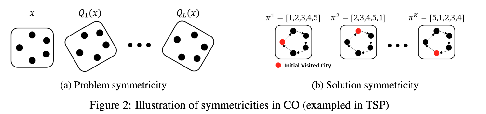
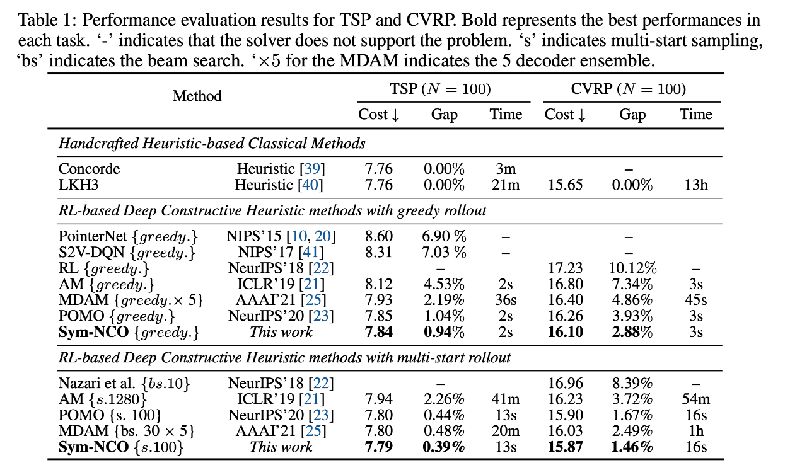
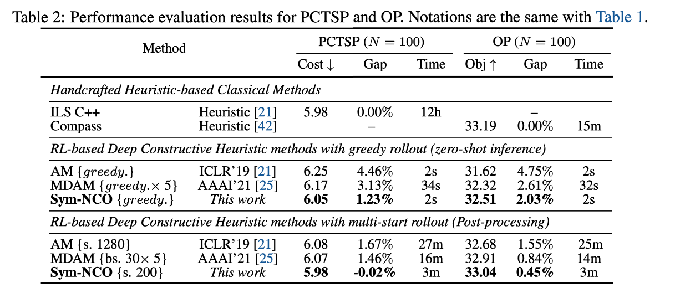

Paper Reading #6: SymNCO
Last updated on October 29, 2025 pm
本文将精读论文 “Sym-NCO: Leveraging Symmetricity for Neural Combinatorial Optimization”，作者 Kim et al.，时间 2022 年，链接 arXiv:2205.13209。
论文概述
这篇论文发表在 NeurIPS 2022 上，提出了 Symmetric Neural Combinatorial Optimization（Sym-NCO）这一训练框架，是一种对 RL4CO 通用的训练策略。它利用 CO 问题的对称性，在损失函数中引入新的正则项，使得模型学到更本质、更泛化的求解策略，从而提升性能。文章在 TSP、CVRP、PCTSP、OP 四类 routing 问题上做了实验。
Abstract
Deep reinforcement learning (DRL)-based combinatorial optimization (CO) methods (i.e., DRL-NCO) have shown significant merit over the conventional CO solvers as DRL-NCO is capable of learning CO solvers less relying on problem-specific ex-pert domain knowledge (heuristic method) and supervised labeled data (supervised learning method). This paper presents a novel training scheme, Sym-NCO, which is a regularizer-based training scheme that leverages universal symmetricities in various CO problems and solutions. Leveraging symmetricities such as rotational and reflectional invariance can greatly improve the generalization capability of DRL-NCO because it allows the learned solver to exploit the commonly shared symmetricities in the same CO problem class. Our experimental results verify that our Sym-NCO greatly improves the performance of DRL-NCO methods in four CO tasks, including the traveling salesman problem (TSP), capacitated vehicle routing problem (CVRP), prize collecting TSP (PCTSP), and orienteering problem (OP), without utilizing problem-specific expert domain knowledge. Remarkably, Sym-NCO outperformed not only the existing DRL-NCO methods but also a competitiveconventional solver, the iterative local search (ILS), in PCTSP at 240× faster speed.Our source code is available at https://github.com/alstn12088/Sym-NCO.
论文的核心思想是，大多数组合优化问题（尤其是那些定义在欧几里得空间上的问题，如TSP、CVRP）都具有对称性。例如，将一个 TSP 的所有城市坐标点整体旋转或翻转，其最优解的路线的形状是不会改变的。然而，现有的 RL4CO 在训练时并没有显式地利用这一先验知识。作者认为，如果能让模型在训练过程中理解并利用这种对称性，模型就能学到更本质、更泛化的求解策略，从而提升性能。Sym-NCO就是为此设计的一套基于正则化的训练框架，通过在损失函数中引入新的正则项，引导模型学习到这种对称不变性。
Introduction
这篇文章要解决的问题是，尽管 DRL-NCO 方法（即 RL4CO 方法）发展迅速，但在解的质量上，它们与高度优化的传统求解器（如LKH3, ILS）或精确求解器（如Concorde）在求解质量上仍然存在差距。那么，有没有通用的训练策略，能够提升 DRL-NCO 方法的表现呢？为此，作者提出了 Sym-NCO 这一训练方法。
首先，定义两种普遍存在于 CO 问题中的对称性：
- 问题对称性 (Problem Symmetricity)：如果两个不同的问题实例 和 拥有完全相同的最优解集合，那么它们就是问题对称的。一个典型的例子是，一个 TSP 实例 和将它所有坐标点绕原点旋转 90 度后得到的新实例 ，它们的最优路径长度和形状是一样的。
- 解对称性 (Solution Symmetricity)：对于同一个问题实例 ，如果两个不同的解 和 得到的目标函数值完全相同，那么它们就是解对称的。例如，在 TSP 中，一条路径和它的逆序路径长度相同。

Sym-NCO 就利用了这两种对称性：问题对称性来源于旋转不变性，即经过旋转的问题实例具有相同的最优解；解对称性来源于具有相同目标值的解。
为了利用对称性，作者决定修改 REINFORCE 的 baseline 项，加入对称性的考虑。具体来说，可以从变换后的问题中，采样出多个解，用它们的平均回报作为 baseline，这样就促进了各个解之前的竞争，这个我们在 POMO 中见过。最终各个解的质量会趋于一致，即实现了问题和解的对称性。具体的做法我们等会展开。
Sym-NCO 是一种模型之上的训练策略，即插即用，能够用来提升已有 RL4CO 模型的性能。
Sym-NCO
Sym-NCO 的核心是一个新的总损失函数的设计：
其中 是带对称性正则的 REINFORCE 损失， 是表征不变性损失 (Invariant Representation Loss)。 又包含了利用解对称性的 ，和利用问题对称性的 。
带对称性正则的 REINFORCE 损失
传统的 REINFORCE 算法通过比较一个解的 Reward 和一个 Baseline 来更新策略。Sym-NCO 巧妙地设计了新的基线来引入对称性。
利用解对称性
为了利用解的对称性，在训练时，对于一个问题实例 ，不再是采样一个解，而是一次性采样 个解 。然后，使用这 个解的平均奖励作为所有这 个解共同的 Baseline。这和 POMO 其实非常像。
这会在这 K 个解之间产生一种内部竞争。奖励高于平均值的解会被增强，低于平均值的会被抑制。这迫使模型生成的多个解质量都比较高且稳定（方差小），利用了解的对称性。
利用问题对称性
对于一个原始问题实例 ，首先通过随机旋转操作，生成 个与之对称的新问题 。接着，对这 个对称问题中的每一个，都采样 个解。最后，计算这 个解的总平均奖励，并将其作为所有解的共同 baseline。
这个机制不仅要求模型在同一个问题上给出稳定高质量的解，还要求模型对于原始问题和它的旋转版本给出的解质量都一样好。这就在策略层面强迫模型去学习问题的不变性。
表征不变性损失
这部分通过一个额外的正则化项，直接在特征层面（representation level）强制模型学习不变性。它将原始问题实例 和其随机旋转后的版本 分别输入到模型的 Encoder 中，得到两个隐层表征 和 。理论上，如果编码器学到了旋转不变性，这两个表征应该是相似的。
作者通过一个投影头（Projection Head），将 和 映射到新的空间，然后最大化这两个投影向量的余弦相似度。
这个损失项直接监督编码器，使其抽取的特征不受旋转等几何变换的影响。
实验及其结果
在 TSP 和 CVRP 问题上，选择了 POMO 作为基础模型；在 PCTSP 和 OP 问题上，选择了 AM 作为基础模型。这两个模型我们之前都介绍过。


在四个问题上，Sym-NCO 都显著提升了原始基础模型的性能，无论是 Greedy 解码还是 Multi-start 解码，达到 SOTA。在 PCTSP 问题上，Sym-NCO 增强的模型在 Multi-start 采样设置下，其解的质量甚至超越了传统启发式算法 ILS，并且速度快了约 240 倍。这证明了 ML 方法的巨大潜力。